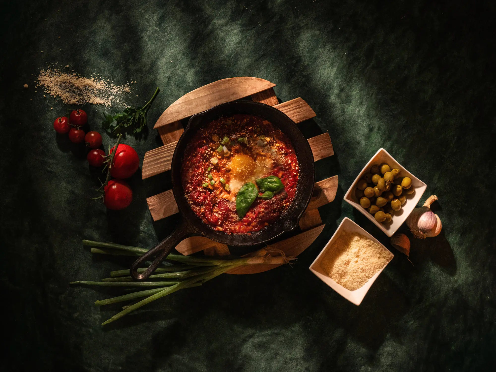
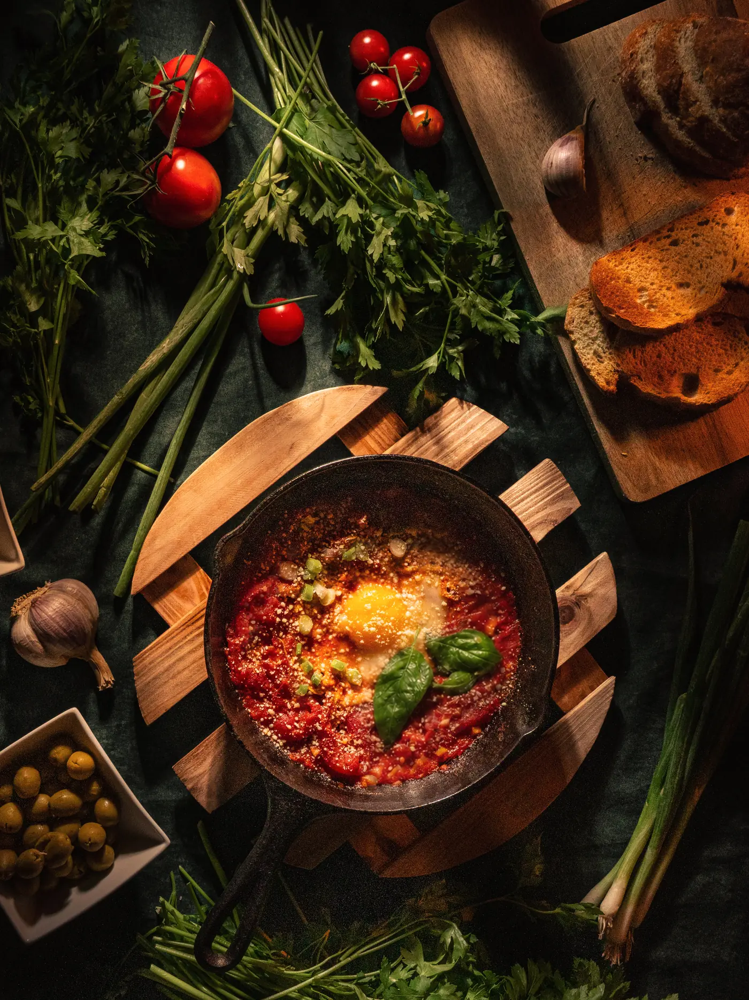
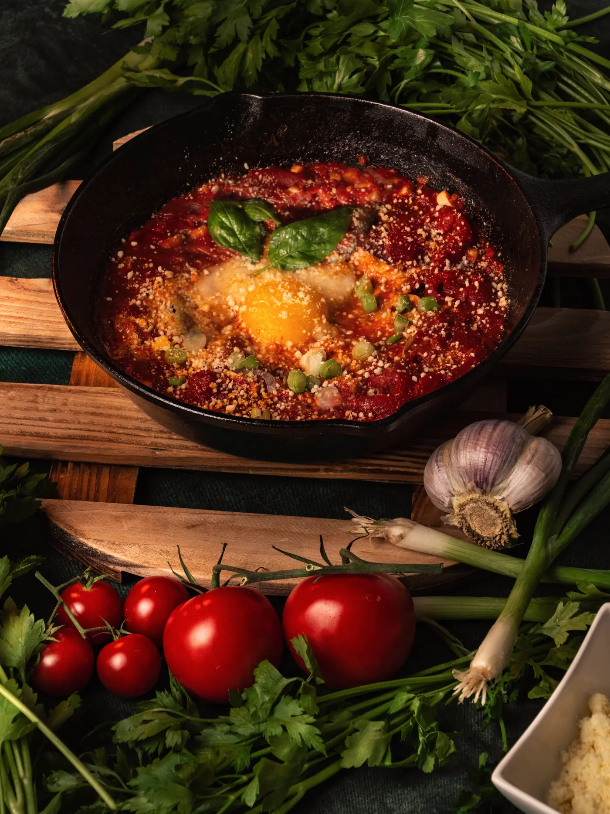
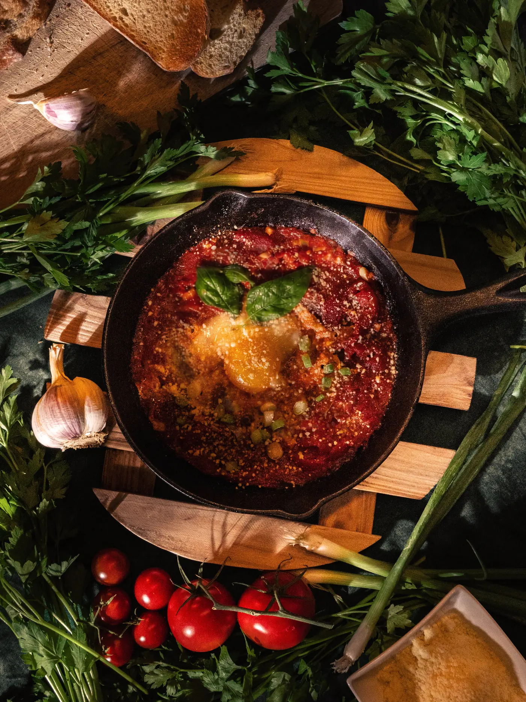
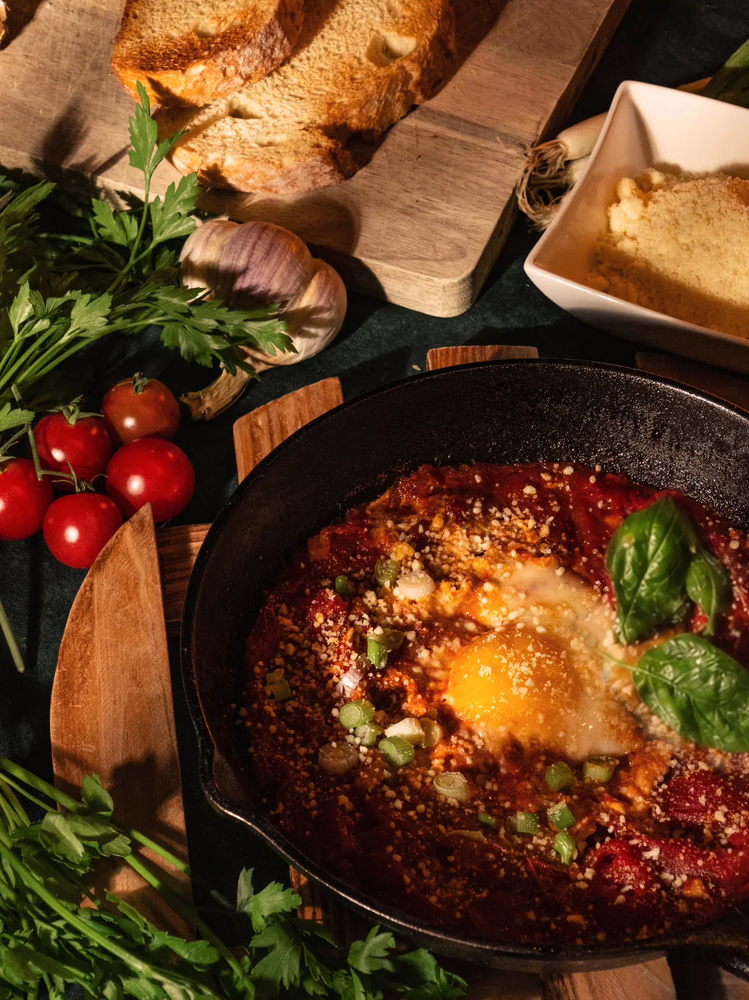

Photographie culinaire
Un projet personnel, pensé comme une table italienne du dimanche. Des œufs mijotés dans une sauce tomate, servis dans la poêle en fonte, entourés de pain grillé, d'ail, de tomates et d'herbes fraîches. Une lumière franche et basse qui fait briller la sauce et creuse chaque texture.



